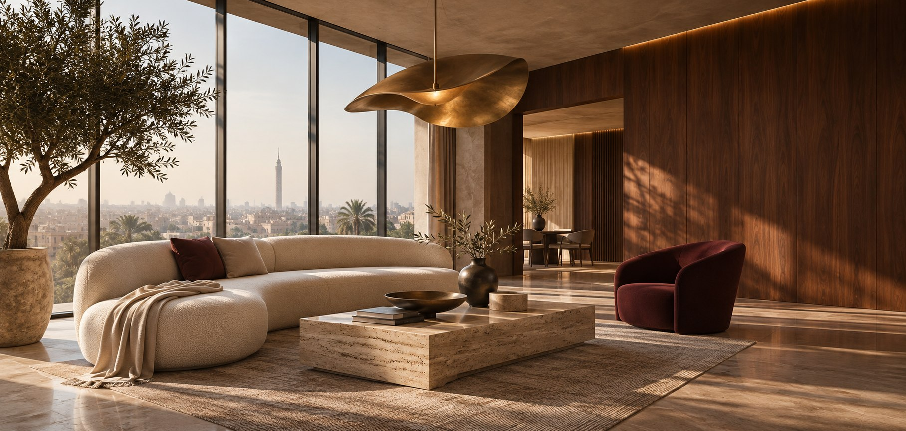

ضوء المدينة
معيشة معاصرة / خشب وحجر طبيعي

المكان أوسع من مساحته
مش مجرد ألوان وقطع أثاث. الفكرة في العلاقة بين الضوء والخامة، وبين اللي بتحبه والطريقة اللي بتعيش بيها.
ده تصوّر لطريقة تقديم استوديو تصميم داخلي: لغة هادئة، تفاصيل محسوبة، ومساحات ليها شخصية. المحتوى هنا يوضّح شكل الخدمة، ولا يمثل شركة قائمة.
من الفكرة للتفاصيل ↗رؤى للمساحات
معيشة معاصرة / خشب وحجر طبيعي
مساحة طعام / خامات متوازنة
تصوّران معماريان — صور مولّدة للتوضيح
من الفكرة إلى المساحة
أمثلة للخدمات التي يمكن عرضها على موقع نشاط التشطيبات، مع نطاق واضح لكل مشروع.
فهم الاستخدام، توزيع المساحة، وتنسيق الألوان والإضاءة والخامات في تصوّر واحد قبل التنفيذ.
شرح مراحل وبنود التشطيب والتجديد، وتوضيح ما يشمله نطاق المشروع والمواد المتفق عليها.
عرض طريقة مراجعة التفاصيل والتنسيق بين عناصر المشروع حسب الاتفاق، مع مساحة لتوضيح أسلوب المتابعة.
خشب. حجر. ضوء.
تجربة طلب مشروع
جرّب تحضير ملخص لمشروعك. النموذج للتوضيح فقط، ولا يُرسل إلى شركة تشطيبات.
عايز موقع بالشكل ده لنشاطك؟ ↗